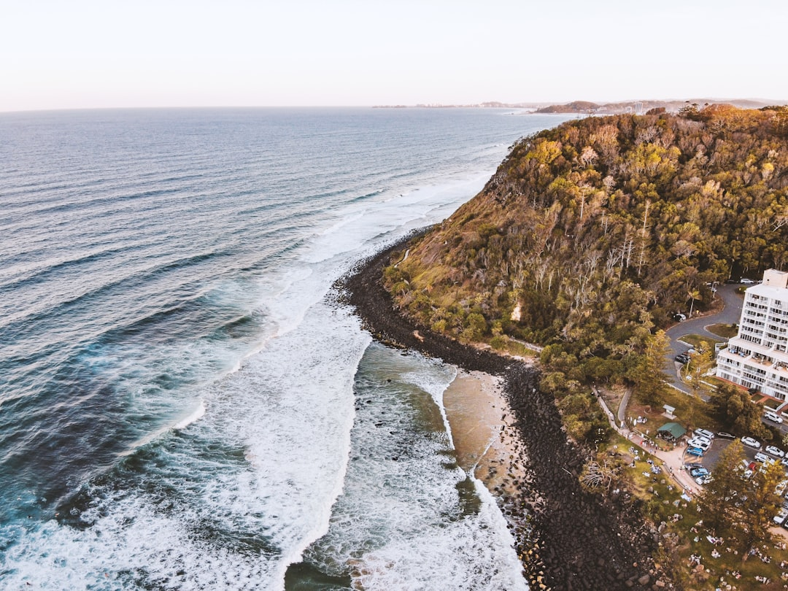

A Gold Coast retaining wall quote should identify material, height, length, access, drainage, engineering and approval costs. The published guide gives a typical range of around $250 to $800 per square metre, with timber sleeper walls usually lower and concrete, block and stone higher. It also states that walls over 1m or carrying surcharge are handled as engineered and council-approved work with AS 4678 design and RPEQ Form 15 certification.
For homeowners comparing retaining wall contractors gold coast options, the useful first move is to separate the wall type, drainage detail and approval pathway before asking for a fixed quote.
Retaining Wall Contractors Gold Coast Explained
Retaining Wall Gold Coast frames the job as a project review, which is a useful lens for owners because the same wall length can price differently once height, access, soil, drainage and approvals are known. A written quote should name the wall system, show the basic dimensions, identify excavation and access assumptions, state the drainage included behind the wall and separate any engineering or council approval costs.
The published process has three parts: submit the project details, let the contractor assess the site, then receive a fixed-price written quote listing scope, materials, drainage and any engineering or approval costs. Follow that sequence before comparing prices, because a low figure without scope makes the real job hard to compare.
Choosing The Wall System
The source page identifies several common wall types. Concrete sleepers are described as steel-reinforced sleepers set between galvanised posts, used on coastal and hinterland blocks. Timber sleepers are framed as H4-treated hardwood and pine options for gardens, terraces and low boundary retaining. Besser block walls are described as core-filled and steel-reinforced for taller engineered retaining and rendered finishes.
Rock, boulder and sandstone walls suit a more natural battered form, while gabion baskets are rock-filled wire baskets used where a strong free-draining wall is wanted. The useful buyer question is whether the material fits the height, soil, access and approval position of the block, not only whether it matches the preferred finish. For a companion guide on local wall choices, see this overview of retaining walls on the Gold Coast.
Drainage Behind The Face
The published service list treats retaining wall drainage and subsoil systems as a standalone item. It names ag-drain, gravel and geofabric behind every wall, with sandy, clay and hinterland soils mentioned in the drainage description. When asking for prices, owners should confirm what sits behind the visible face of the wall, not just the sleeper, block or stone finish.
- Ask where the ag-drain will discharge.
- Confirm whether gravel and geofabric are included in the quoted scope.
- Check whether the work is a new wall, repair or full replacement.
- Ask whether excavation access changes the material choice or installation method.
Approval And Engineering Questions
The source guide states that engineered and council-approved walls apply when walls are over 1m or carrying a surcharge, with design to AS 4678, RPEQ Form 15 design certification and Gold Coast City Council approval. Its FAQ also says approval is generally required unless a wall is under 1.0 metre high and more than 1.5 metres from a building or another retaining wall.
Owners should treat those points as quote questions, because the answer depends on the actual wall and surrounding site. Ask whether wall height, nearby buildings, tiered walls, driveway loads or boundary conditions create an engineering trigger. If design or approval is needed, the quote should separate those allowances rather than hide them inside one total.
Who This Applies To
This guide is most relevant to Gold Coast homeowners planning a new garden wall, replacing a damaged wall, terracing a sloping yard or comparing materials before requesting a written quote. The supplied location notes point to varied block conditions, including coastal headland areas, canals, hillside blocks, waterfront properties, acreage properties, modern estate homes and bushland blocks.
Those differences change the questions to ask. A driveway wall, a waterfront job and a hinterland slope can each put different pressure on access, drainage, wall height and approval checks. The consistent requirement is a quote that ties the proposed wall to the actual site, including material, drainage and compliance items.
- Define the wall. Record the wall length, approximate height, purpose, access limits and whether it is new work or replacement.
- Choose likely materials. Shortlist timber, concrete sleeper, block, rock or gabion options based on the site and desired finish.
- Ask about drainage. Confirm ag-drain, gravel, geofabric and discharge details before comparing the visible wall price.
- Check approval triggers. Ask whether height, surcharge, nearby structures or tiered walls require engineering or council approval.
- Compare written scope. Compare quotes by inclusions, exclusions, materials, approvals and repair or replacement assumptions.
| Option | Best question to ask | Source notes |
|---|---|---|
| Timber sleeper | Is it suitable for a low garden, terrace or boundary wall? | H4-treated hardwood and pine sleeper walls are listed for gardens, terraces and low boundary retaining. |
| Concrete sleeper | Are galvanised posts and drainage included in the scope? | Steel-reinforced concrete sleepers set between galvanised posts are listed as a popular engineered choice. |
| Besser block | Does the height or finish require engineering? | Core-filled, steel-reinforced concrete block walls are listed for taller engineered retaining and rendered finishes. |
| Gabion or rock | Will a free-draining or battered form suit the site? | Gabion, sandstone and boulder options are listed for rugged or free-draining outcomes. |
Common questions
How much should I budget for a Gold Coast retaining wall? The published guide gives a typical range of around $250 to $800 per square metre, depending on material, height, access and whether engineering is required. It says approvals and complex excavation are usually outside that simple range.
Do all retaining walls need council approval? No. The supplied FAQ says approval is generally required unless the wall is under 1.0 metre high and more than 1.5 metres from a building or another retaining wall.
What should be included in a fixed written quote? A useful quote should list scope, wall material, drainage and any engineering or approval costs. The source page specifically names these items in its project review process.
Which material is cheapest? The source guide says timber sleeper walls are usually at the lower end of the typical cost range, while concrete, block and stone walls sit higher due to labour and engineering needs.
This guide covers retaining wall quote scope, materials, drainage and approval questions for Gold Coast residential projects.